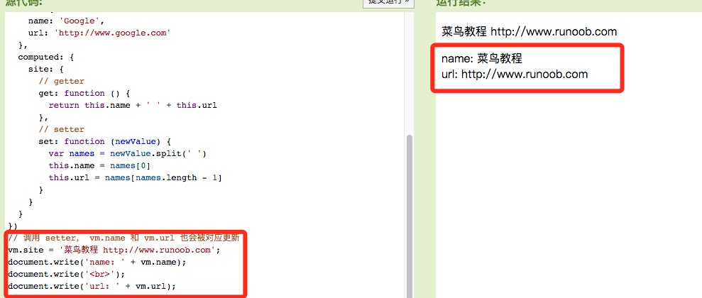
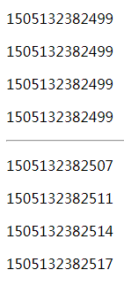

Vue.js 計算プロパティ
計算プロパティのキーワード:computed。
計算プロパティは、複雑なロジックを処理するときに非常に役立ちます。
以下の文字列を反転させる例を見てみましょう：
例 1 ではテンプレートが非常に複雑になり、理解しにくくなっています。
次に、計算プロパティを使用した例を見てみましょう：
例 2
<div id="app">
<p>元の文字列: {{ message }}</p>
<p>計算後の反転文字列: {{ reversedMessage }}</p>
</div>
<script>var vm = new Vue({
el: '#app',
data: {
message: 'Runoob!'
},
computed: {
// 计算属性的 getter
reversedMessage: function () {
// `this` 指向 vm 实例
return this.message.split('').reverse().join('')
}
}
})</script>
試してみる »
例 2 では、reversedMessage という計算プロパティを宣言しています。
提供された関数は、プロパティ vm.reversedMessage のゲッターとして使用されます。
vm.reversedMessage は vm.message に依存しており、vm.message が変更されると、vm.reversedMessage も更新されます。
computed vs methods
methods を使用して computed の代わりにすることもできます。効果はどちらも同じですが、computed はその依存関係に基づいてキャッシュされ、関連する依存関係が変更された場合にのみ再取得されます。一方、methods を使用すると、再レンダリングのたびに関数が常に再呼び出しされて実行されます。
例 3
methods: {
reversedMessage2: function () {
return this.message.split('').reverse().join('')
}
}
試してみる »
computed を使用する方がパフォーマンスが良いと言えます。ただし、キャッシュしたくない場合は、methods プロパティを使用できます。
computed setter
computed プロパティはデフォルトでは getter のみですが、必要に応じて setter を提供することもできます:
例 4
var vm = new Vue({
el: '#app',
data: {
name: 'Google',
url: 'http://www.google.com'
},
computed: {
site: {
// getter
get: function () {
return this.name + ' ' + this.url
},
// setter
set: function (newValue) {
var names = newValue.split(' ')
this.name = names[0]
this.url = names[names.length - 1]
}
}
}
})
//setter を呼び出すと、vm.name と vm.url も対応して更新されます。
vm.site = 'Runoob http://www.runoob.com';
document.write('name: ' + vm.name);
document.write('<br>');
document.write('url: ' + vm.url);
試してみる »
例の実行結果からわかるように、vm.site = '菜鸟教程 http://www.runoob.com'; を実行すると、setter が呼び出され、vm.name と vm.url も対応して更新されます。

その他の拡張
softfei
che***1c@sina.com
コードを少し変更しました。computed プロパティの「依存キャッシュ」の概念と、method との違いがわかると思います。次のコードのように、cnt は vm オブジェクトから独立した変数です。reversedMessage という計算プロパティを使用するとき、最初にコードが実行されて値が得られます。その後 reversedMessage という計算プロパティを再度使用するときは、vm オブジェクトが変更されていないため、画面のレンダリングはその値を直接使用し、コードを再実行することはありません。一方、reversedMessage2 にはこのキャッシュがないため、使用するたびに関数コードが実行され、毎回返される値が異なります。
var cnt=1; var vm = new Vue({ el: '#app', data: { message: 'Runoob!' }, computed: { // 计算属性的 getter reversedMessage: function () { // `this` 指向 vm 实例 cnt+=1; return cnt+this.message.split('').reverse().join('') } }, methods: { reversedMessage2: function () { cnt+=1; return cnt+this.message.split('').reverse().join('') } } })試してみる »
softfei
che***1c@sina.com
挑战者666888
358***071@qq.com
計算プロパティの依存キャッシュを使用する必要がない場合は、定義メソッドを使用して計算プロパティの代わりにすることができます。methods 内にメソッドを定義すると同じ効果が得られ、さらにそのメソッドはパラメータを受け取ることもできるため、より柔軟に使用できます。
<div id ="app">My Runoob Application <p>原始数据：{{text}}</p> <!-- 注意，这里的reversedText是方法，所以要带()--> <p>变化后数据：{{reversedText()}}</p> </div> <script> var app = new Vue({ el: '#app', data: { text:'123,456', }, methods:{ reversedText: function(){ return this.text.split(',').reverse().join(','); } }, }); </script>試してみる »
挑战者666888
358***071@qq.com
tjock
lxi***tang@gmail.com
参考URL
computed vs method：
Vue.js では、メソッドとして動的に使用する方法として、methods と computed の2つの方法があります。
一方、methods を使用すると、再レンダリング時に関数は常に再呼び出しされて実行されます。
理解を容易にするために、まずソースコードを少し示します:
<!DOCTYPE html> <html> <head> <meta charset="utf-8"> <title>title</title> <script src="https://cdn.staticfile.org/vue/2.2.2/vue.min.js"></script> </head> <body> <div class="test"> <!--computed计算属性--> <p>{{now}}</p> <p>{{now}}</p> <p>{{now}}</p> <p>{{now}}</p> <hr /> <!--横线分割--> </div> <div class="test2"> <!--methods方法，注意new（）加了括号--> <p>{{now()}}</p> <p>{{now()}}</p> <p>{{now()}}</p> <p>{{now()}}</p> </div> </body> <script type="text/javascript"> var myVue = new Vue({ el: ".test", computed: { now: function() { var yanshi = 0; for(var o = 0; o < 2000; o++) { //延时 for(var q = 0; q < 2000; q++) { yanshi++; } } return Date.now() } } }); var vue2 = new Vue({ el: '.test2', methods: { now: function() { var yanshi = 0; for(var o = 0; o < 2000; o++) { for(var q = 0; q < 2000; q++) { yanshi++; } } return Date.now() } } }) </script> </html>試してみる »
結果は次のとおりです：

実行結果は上記のとおりです。computed 計算プロパティの場合、ページに入るたびに最初の情報がそのまま使用され、now は再トリガーされません。これが依存キャッシュです。（遅延がある場合、複数回出力される時間は同じになります）。
では、「関連する依存関係が変更された場合にのみ再取得される」とはどういうことでしょうか。たとえば、reversedMessage function() 計算プロパティでは message 変数が参照されています。
つまり、message が変更されていない限り、reversedMessage 計算プロパティを複数回アクセスすると、関数を再実行することなく、以前の計算結果がすぐに返されます。
一方、methods はリアルタイムであり、再レンダリング時には関数が常に再呼び出しされて実行され、キャッシュされません。（複数回の出力で時間が異なります）
computed を使用する方がパフォーマンスが良いと言えます。ただし、キャッシュしたくない場合は、methods プロパティを使用できます。
computed プロパティはデフォルトでは getter のみですが、必要に応じて setter を提供することもできます。つまり、実際には computed でも引数を渡すことができます。
tjock
lxi***tang@gmail.com
参考URL
Hanger
jia***eikeng@163.com
computed の依存キャッシュには、もう一つの側面があります：
var cnt=1; var vm = new Vue({ el: '#app', data: { message: 'Runoob!' }, computed: { // 计算属性的 getter reversedMessage: function () { // `this` 指向 vm 实例 cnt+=1; return cnt+this.message.split('').reverse().join('') } }, methods: { reversedMessage2: function () { cnt+=1; this.message = "abc"; return cnt+this.message.split('').reverse().join('') } } })上記の実行結果は次のとおりです：
Hanger
jia***eikeng@163.com